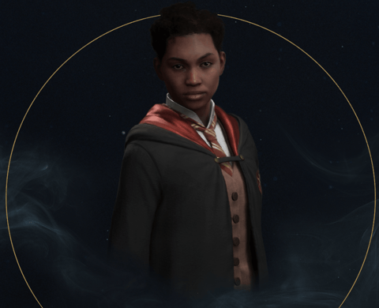
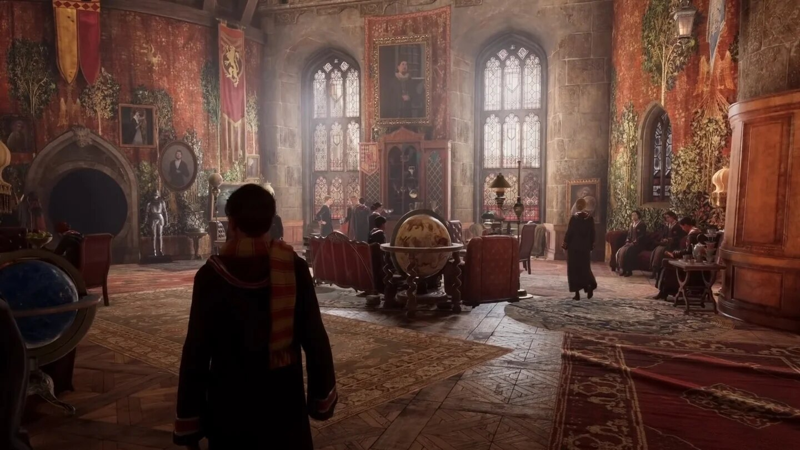

Gryffindor es una de las cuatro casas del Colegio Hogwarts de Magia y Hechicería, fundada por Godric Gryffindor. Su animal emblemático es el león y sus colores son el rojo escarlata y el dorado. Minerva McGonagall es la más reciente jefa de la casa. Sir Nicholas de Mimsy-Porpington también conocido como "Nick Casi Decapitado" es el fantasma de la casa. Las principales características de los Gryffindor son el coraje y la caballerosidad. El elemento de Gryffindor es el fuego, ya que se lo asocia al valor y coraje de esta casa. Además, el fuego simboliza el honor en variadas ocasiones, lo cual también puede aplicar para Gryffindor.
Vestimenta
La vestimenta de los estudiantes de la casa Gryffindor se atribulle a un Rojo con vestiduras amarillas.
Reputación
"Coraje y valentía. Un buen miembro de Gryffindor tiene gran osadía, temple y caballerosidad. Son capaces de todo por defender en lo que creen y nunca se dan por vencidos. También son capaces de romper las reglas si es necesario y les encantan los retos, cuanto más difíciles, mejor"
La Casa de Gryffindor estima el coraje, así como la osadía, el temple y la caballerosidad, así, sus miembros se caracterizan por ser valientes aunque a veces hasta el punto de ser imprudentes. La Casa de Gryffindor ha aportado numerosos miembros al Ejército de Dumbledore y a la Orden del Fénix. Hay una histórica rivalidad entre las Casas de Gryffindor y Slytherin, rivalidad que se remonta a la época medieval cuando sus respectivos fundadores, Godric Gryffindor y Salazar Slytherin, tuvieron serias desavenencias respecto a las creencias de Slytherin de la pureza de sangre. Desde entonces, las peleas entre ambas Casas han sido continuas. Miembros de otras Casas (particularmente de Slytherin) creen que existe un cierto favoritismo hacia Gryffindor (por ejemplo por el hecho de que Harry Potter no fuera retirado del Torneo de los Tres Magos al salir elegido como cuarto campeón) Sin embargo, las Casas de Ravenclaw y Hufflepuff tienden a aliarse con Gryffindor en su rivalidad con Slytherin. Un claro ejemplo de esto es la Segunda Guerra Mágica (los miembros del Ejército de Dumbledore eran de Gryffindor, Hufflepuff y Ravenclaw) y en la Batalla de Hogwarts, mientras los Slytherin abandonaban el colegio, muchos estudiantes de las demás Casas permanecieron en Hogwarts para luchar contra Voldemort y sus mortífagos.
Rasgos
Gryffindor no se trata solo de lo valiente que eres, sino de cuánto valoras la valentía y el coraje. También se trata de compasión, misericordia y amabilidad.Gryffindor es la casa de los valientes, los valientes, los audaces. Es la casa de los combatientes. Los Gryffindors son los primeros en saltar a una pelea, incluso a riesgo de sus propias vidas. ¡El símbolo de Gryffindor es un león, un símbolo apto para una casa tan fuerte!
- Coraje
- Caballería
- Nervio
- Compasión
- Determinación
Sala común

La sala común de Gryffindor está localizada en la Torre de Gryffindor, la entrada está localizada en el séptimo piso y está custodiada por el retrato de la Dama Gorda, que utiliza un vestido rosa. Ella permite la entrada solamente si la clave es la correcta (cambia regularmente). Tras ella se encuentra una gran sala llena de grandes armarios, mesas, y un pizarrón donde los estudiantes encuentran noticias, anuncios, avisos de pérdida, etc. Una ventana mira hacia afuera, a los terrenos del castillo, y una gran chimenea domina la pared. Es muy reconfortante y los estudiantes de Gryffindor se reúnen para estudiar, celebrar o relajarse. La sala común es donde usualmente toman parte las fiestas de celebración luego de una victoria de Gryffindor en el Quidditch, o cuando Harry Potter completaba exitosamente una etapa del Torneo de los Tres Magos. Aquí se dio lugar el primer beso entre Harry y Ginny después de la victoria en Quidditch en 1997. La chimenea fue usada en varias ocasiones por Sirius Black para comunicarse con Harry mientras huía del Ministerio de Magia. Existen dos escaleras, cada una dirige al dormitorio de los hombres y las mujeres respectivamente. Las escaleras de los dormitorios de las chicas están encantados para convertirse en un tobogán si un chico intenta subir por ellas, esto no pasa en las otras escaleras, puesto que se entendió que las chicas eran más de fiar que los chicos, por lo que Hermione podía subir al dormitorio de los chicos.